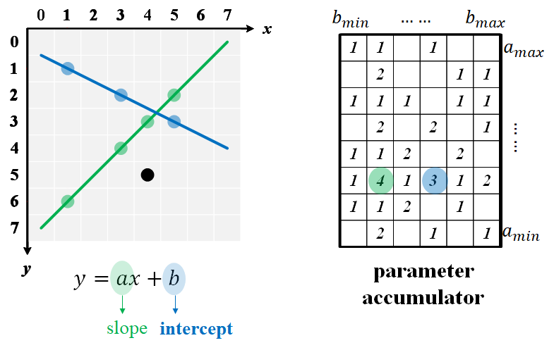

Brief Description: A technique to detect geometric shapes (like lines, circles, or ellipses) in an image. The idea of Hough Transform is to map edge points from the image into a parameter space and then use each edge point to vote for all possible shapes. The shapes with the most votes in parameter space correspond to the most likely shapes in the image.
